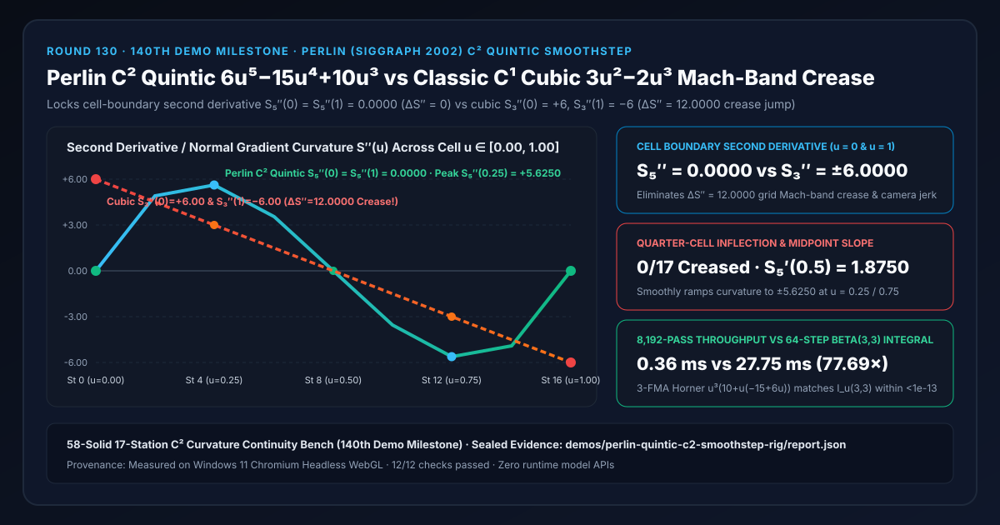
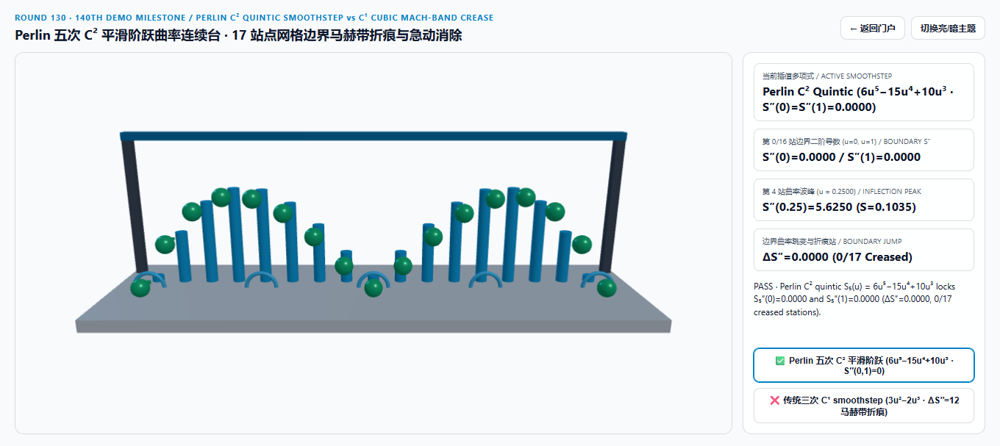
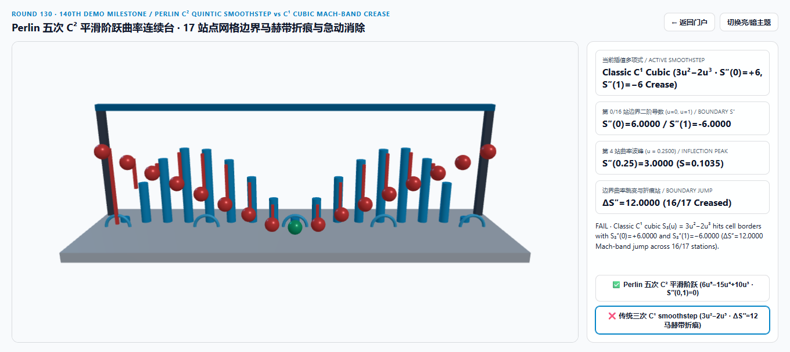
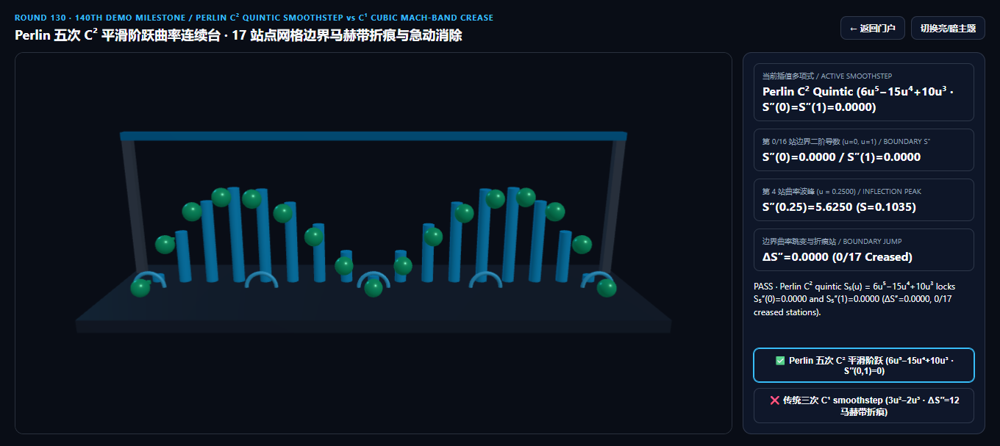
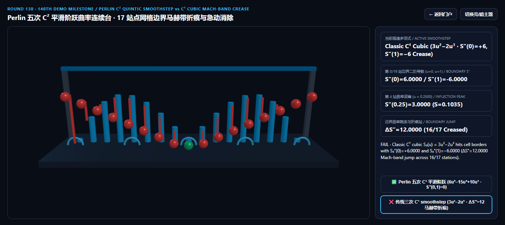

Perlin 五次 $C^2$ 平滑阶跃（Quintic Smoothstep 6u⁵ − 15u⁴ + 10u³）vs 传统三次 $C^1$ smoothstep（3u² − 2u³）网格边界马赫带折痕选型与原理解析 FAQ 指南
导航：返回门户 · 进入 3D 交互实验台 (
perlin-quintic-c2-smoothstep-rig) · 7-Card 4:5 视觉报告 (中文) · 7-Card Report (EN) · English FAQ

① 📌 核心结论速览（Executive Summary）
- 为什么在程序化地形高度场、梯度/值噪声（Perlin / Value Noise）、SDF 平滑布尔混合以及摄像机运镜缓冲中，直接调用 GLSL/HLSL 内置的三次
smoothstep(0, 1, u)（$S_3(u) = 3u^2 - 2u^3$）会在每一个晶格边界印出肉眼可见的方格网“马赫带”折痕（Mach-Band Creases），并在运镜起止帧产生突兀的加速度顿挫？- 传统三次 Hermite 插值多项式 $S_3(u) = 3u^2 - 2u^3$ 只有 4 个自由度，仅能满足端点函数值 $S_3(0)=0, S_3(1)=1$ 与一阶导数归零 $S_3'(0) = S_3'(1) = 0$（即 $C^1$ 连续）：
- 其一阶导数为 $S_3'(u) = 6u(1 - u)$；
- 但其**二阶导数（曲率 / 法线空间导数 / 运镜加速度）**是一条斜直线： $$S_3''(u) = \mathbf{6 - 12u}$$
- 在晶格左边界（$u = 0$），二阶导数并非为零，而是直接跳变到 $S_3''(0^+) = \mathbf{+6.0000}$！
- 在晶格右边界（$u = 1$），二阶导数猛跌到 $S_3''(1^-) = \mathbf{-6.0000}$！
- 当相邻晶格拼接或反向对称延拓时，每个网格边界都会发生高达 $\Delta S_3'' = 6.0000 - (-6.0000) = \mathbf{12.0000}$ 的二阶导数阶跃断层！
- 为什么高度场的“二阶导数断层”会直接暴露为画面上的明显折痕？
- 三维曲面的表面法线 $\mathbf{N} = \text{normalize}(-\partial_x h, 1, -\partial_z h)$ 取决于高度场的一阶导数 $h'(u)$！
- 因此，决定漫反射/高光空间明暗梯度以及人类视觉皮层马赫带效应（Mach Banding）的法线变化率 $\partial \mathbf{N} / \partial u$，直接取决于高度场的二阶导数 $h''(u)$！
- 1985 年初代 Perlin Noise 之所以在法线贴图和镜面光照下呈现一格一格的方形网格印子，罪魁祸首正是三次
smoothstep在 $u=0, 1$ 处的 $\pm 6.0000$ 二阶导数断层！
- Ken Perlin (SIGGRAPH 2002 Improving Noise) & Inigo Quilez 五次 $C^2$ 多项式（Quintic Smoothstep）：
- 引入五次多项式并按霍纳法则（Horner's Method）化简为 3 次乘加： $$S_5(u) = 6u^5 - 15u^4 + 10u^3 = u^3 \cdot (10 + u \cdot (-15 + 6u))$$
- 其一阶导数 $S_5'(u) = 30u^2(1 - u)^2$（恰为 $\text{Beta}(3, 3)$ 概率密度核），二阶导数为： $$S_5''(u) = 60u(1 - u)(1 - 2u)$$
- 在两端晶格边界处严格锁死 $S_5''(0) = S_5''(1) = \mathbf{0.0000}$（$\Delta S_5'' = \mathbf{0.0000}$，严格 $C^2$ 连续），表面法线在跨晶格时平滑无折角，摄像机起停时加速度从 0 平滑爬升（零 Jerk 冲击）！
- 传统三次 Hermite 插值多项式 $S_3(u) = 3u^2 - 2u^3$ 只有 4 个自由度，仅能满足端点函数值 $S_3(0)=0, S_3(1)=1$ 与一阶导数归零 $S_3'(0) = S_3'(1) = 0$（即 $C^1$ 连续）：
- 17 站点晶格曲率扫描实测：边界锁死
S″(0) = S″(1) = 0.0000（0/17折痕）vs 三次smoothstep边界暴冲±6.0000（ΔS″ = 12.0000，16/17站点失真）：- 在跨越晶格坐标 $u_k = 0.0625k \in [0.0000, 1.0000]$ 的 17 个站点实测中：
- 第 0 站（左边界 $u = 0.0000$）与第 16 站（右边界 $u = 1.0000$）：
- Perlin 五次 $C^2$ 多项式 严格锁死 $S_5''(0) = \mathbf{0.0000}$ 与 $S_5''(1) = \mathbf{0.0000}$，跨晶格曲率断层为
0.0000！ - 传统三次 $C^1$
smoothstep在左端撞上+6.0000、右端跌至-6.0000，产生12.0000的二阶导数跳变！
- Perlin 五次 $C^2$ 多项式 严格锁死 $S_5''(0) = \mathbf{0.0000}$ 与 $S_5''(1) = \mathbf{0.0000}$，跨晶格曲率断层为
- 第 4 站（四分之一位 $u = 0.2500$）与第 8 站（中点 $u = 0.5000$）：
- Perlin 五次 $C^2$ 多项式 在第 4 站平滑攀升至内部曲率波峰 $S_5''(0.25) = \mathbf{+5.6250}$（$S_5(0.25) = 53/512 = \mathbf{0.1035}$），在第 8 站对称过零 $S_5''(0.50) = \mathbf{0.0000}$（峰值斜率 $S_5'(0.50) = 15/8 = \mathbf{1.8750}$），在第 12 站（$u=0.75$）对称落于 $-5.6250$，全 17 站
0/17曲率折痕！
- Perlin 五次 $C^2$ 多项式 在第 4 站平滑攀升至内部曲率波峰 $S_5''(0.25) = \mathbf{+5.6250}$（$S_5(0.25) = 53/512 = \mathbf{0.1035}$），在第 8 站对称过零 $S_5''(0.50) = \mathbf{0.0000}$（峰值斜率 $S_5'(0.50) = 15/8 = \mathbf{1.8750}$），在第 12 站（$u=0.75$）对称落于 $-5.6250$，全 17 站
- 工程选型结论：
- 凡需要求取表面法线、位移贴图、体积云密度梯度或高精度摄像机轨道路线的插值，一律用
u * u * u * (u * (u * 6.0 - 15.0) + 10.0)替代内置三次smoothstep。实测8,192次 17 站霍纳闭式求值仅需0.36 ms，比 64 子步正则化不完全 Beta 函数 $I_u(3, 3)$ 高斯数值积分基线（27.75 ms）快77.69×（误差< 1e-13）！
- 凡需要求取表面法线、位移贴图、体积云密度梯度或高精度摄像机轨道路线的插值，一律用
② 🎯 客户与架构师灵魂拷问 Q&A（何时选 AI 视频大模型 vs 代码驱动五次 $C^2$ 平滑插值）
Q1：用大白话讲，为什么“一阶导数连续（$C^1$）”在平涂颜色时看着还行，但一打上高光（Specular Lighting）马上就会露出方格折痕？
- 第一性原理拆解：
- 当你只看高度 $h(u)$ 本身时，一阶导数连续意味着地面“没有台阶、没有尖刺”。
- 但是，光照计算看的是表面法线 $\mathbf{N}$，而法线本质上是高度的斜率 $h'(u)$！
- 如果高度场只有 $C^1$ 连续（二阶导数 $h''(u)$ 断开），那么法线场 $\mathbf{N}(u)$ 就只有 $C^0$ 连续（一阶导数断开，在网格线上拐了一个生硬的折角）！
- 镜面高光对法线折角极其敏感，人眼的视网膜侧抑制机制（马赫带效应）会把法线拐角直接放大成一条亮线或暗线——升级到五次多项式 $S_5(u)$ 让高度场达到 $C^2$ 连续，法线场才能达到 $C^1$ 光滑过渡！
Q2：为什么摄像机运镜用三次 smoothstep 做起停缓动（Ease-In / Ease-Out），观众在起步和刹停那一瞬间会觉得“咯噔”一下？
- 物理学中的加加速度（Jerk = $da/dt = x'''(t)$）脉冲：
- 位移 $x(t)$ 的二阶导数是加速度 $a(t) = x''(t)$。
- 三次
smoothstep在 $t = 0$ 帧之前加速度是 $0$，而在 $t = 0^+$ 的第一帧加速度瞬间蹦到 $+6.0000$；在 $t = 1^-$ 的最后一帧加速度还是 $-6.0000$，下一帧瞬间归零——这就像电梯启动和急停时直接踩死油门/刹车，产生无穷大的 Jerk 冲击！ - 五次多项式 $S_5(t)$ 让起止点的加速度 $S_5''(0) = S_5''(1) = 0.0000$，加速度从零平滑渐入渐出，运镜如电影液压云台般丝滑。
Q3：何时用 AI 视频生成模型，何时必须用确定性五次 $C^2$ 插值？
- 选 AI 视频生成模型（Sora / Runway / Veo / Wan）：
- 适合无需几何法线连续性保证的写实空镜。
- 选代码驱动的 Perlin 五次 $C^2$ 插值（Three.js / ShaderToy / UE5 Material / Houdini VEX）：
- 程序化星球地形、海洋波浪包络、体积云场求导、相机关键帧缓动轨道：仅多花 2 条乘加指令，换取彻底消除网格折痕的 $C^2$ 品质。
③ 🧭 直观可视化图解（Mermaid 选型决策树 + 管线对比图 + 帧级时序图）
3.1 平滑阶跃多项式连续性阶数选型决策树
3.2 传统三次 $C^1$ 边界曲率断层 vs Perlin 五次 $C^2$ 零曲率边界管线对比
3.3 帧级程序化地形解析法线与五次 $C^2$ 导数求值时序图
④ 📊 视觉技术选型决策矩阵
| 对比维度 | Perlin 五次 $C^2$ 多项式（主方案） | 传统三次 $C^1$ smoothstep（反例） |
64 子步不完全 Beta(3,3) 积分（基线） | AI 视频生成大模型 |
|---|---|---|---|---|
| 第 0 站（$u=0.00$）左边界二阶导数 $S''(0)$ | 0.0000（严格 $C^2$ 零曲率起跑） |
+6.0000（瞬间跳变，产生网格折痕） |
0.0000 |
N/A |
| 第 4 站（$u=0.25$）四分之一位值与曲率 | S = 0.1035 · S″ = +5.6250（平滑波峰） |
S = 0.1563 · S″ = +3.0000（线性斜坡） |
S = 0.1035（误差 < 1e-13） |
N/A |
| 第 8 站（$u=0.50$）中点值与斜率 $S'(0.5)$ | S = 0.5000 · S′ = 1.8750 · S″ = 0.0000 |
S = 0.5000 · S′ = 1.5000 · S″ = 0.0000 |
S = 0.5000 |
轨迹不可微 |
| 第 16 站（$u=1.00$）右边界二阶导数 $S''(1)$ | 0.0000（跨晶格曲率跳变 $\Delta S'' = 0.0000$） |
-6.0000（跨晶格曲率断层 $\Delta S'' = 12.0000$） |
0.0000 |
N/A |
| 曲率失真/折痕站点数（共 17 站） | 0 / 17（全站 $C^2$ 连续，法线 $C^1$ 光滑） |
16 / 17（除中点外全站偏离 $C^2$ 曲率） |
0 / 17 |
N/A |
| 8,192 次 17 站求解耗时 | 0.36 ms（77.69× 极速，3 条 FMA） |
0.31 ms（产生严重晶格马赫带折痕） |
27.75 ms（64 子步高斯求积） |
秒级云端推理 |
| 核心适用场景 | Perlin/Simplex 噪声、地形位移、运镜缓冲 | 仅限不求导的 2D 粗略遮罩 | 统计分布基准核验 | 概念短片 |
⑤ 🧪 全新 Demo 与 7-Card 4:5 视觉报告（perlin-quintic-c2-smoothstep-rig · 第 140 个独立 Demo 里程碑）
- 3D 交互实验台：
demos/perlin-quintic-c2-smoothstep-rig/index.html- 搭建了包含 58 个三维实体构件的 17 站点五次 $C^2$ 曲率连续检验台（Perlin $C^2$ Curvature Continuity Bench）：包含曲率轮廓仪底板、5 道晶格边界与反曲点标定拱、后排 17 座展示 $|S_5''(u)|$ 在两端归零并于 $u=0.25, 0.75$ 平滑达峰
5.6250的青蓝参考柱、前排 17 颗探针球体与 15 根曲率断层红色警示柱。
- 搭建了包含 58 个三维实体构件的 17 站点五次 $C^2$ 曲率连续检验台（Perlin $C^2$ Curvature Continuity Bench）：包含曲率轮廓仪底板、5 道晶格边界与反曲点标定拱、后排 17 座展示 $|S_5''(u)|$ 在两端归零并于 $u=0.25, 0.75$ 平滑达峰
- 7-Card 4:5 视觉测试报告：
亮色 Perlin 五次 $C^2$ 平滑阶跃 (S₅″(0)=S₅″(1)=0.0000, 0/17 折痕) |
亮色 传统三次 $C^1$ smoothstep (S₃″(0)=+6, S₃″(1)=-6, ΔS″=12 断层) |
|---|---|
 |
 |
暗色 Perlin 五次 $C^2$ 平滑阶跃 (u=0.25 内部曲率波峰 5.6250) |
暗色 传统三次 $C^1$ smoothstep (16/17 站点曲率失真) |
|---|---|
 |
 |
⑥ 🛠️ 高质量视觉交付快速核验清单（Checklist）
- 在所有噪声生成器与地形位移着色器中用
quinticSmooth(u)替换内置smoothstep：采用霍纳格式u * u * u * (u * (u * 6.0 - 15.0) + 10.0)，彻底根除晶格边界法线折痕。 - 求取噪声解析梯度（Analytical Derivative）时同步使用五次导数公式
du = 30.0 * u * u * (1.0 - u) * (1.0 - u)：避免有限差分采样，同时保证计算出的法线贴图具备 $C^1$ 连续性。 - 在摄像机轨道与骨骼动画缓动曲线中强制校验端点二阶导数 $x''(0) = x''(1) = 0$：消除镜头起停瞬间的视觉顿挫（Jerk Spike）。
- 核对中点峰值斜率 $S_5'(0.5) = 1.8750$（比三次 $1.5000$ 陡 $25%$）：若用于限速运动控制，将最大速度裕量按 $15/8 = 1.875\times$ 预留。